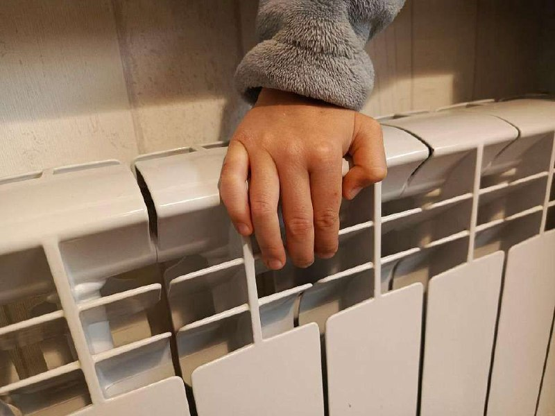
01
Общество и городская среда · событие дня

Меньше всего в регионе получали в сфере производства лекарственных средств и материалов, больше всего – те, кто занят в деятельности воздушного и космического транспорта.…
Герхард Шрёдер был вместе с Владимиром Путиным, когда глава государства отмечал вчера свой день рождения.…
Ход выполнения работ по обновлению подъёмников в рамках региональной программы капитального ремонта находится на особом контроле губернатора Алексея Русских.…
Через Арбитражный суд Ульяновской области Иванов пытался добиться либо возврата поставленной в 2023 году мебели в Тереньгульскую РБ – а это 43 наименования в количестве 259 единиц на общую сумму 3 101 940,00 руб., либо денег.…

Каждый из нас может направлять им обращения по конкретным вопросам и проблемам территории.…


Теперь за победу борется Димитровград и его команда, объединившая центры помощи, бизнес, общественные организации и волонтеров.…

В ходе двухдневного рабочего визита Президент России примет участие в заседании Совета глав государств СНГ и Каспийском экологическом саммите.…
Депутат попросил определить ответственных за уход и утвердить правила постоянного обслуживания объекта.
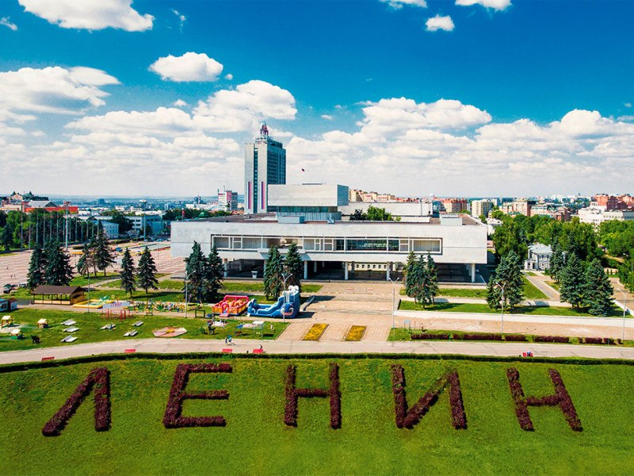
7 октября Губернатор Алексей Русских осмотрел сооружение на территории МБОУ КШ № 7 им. В.В.

Стажировку придется оформить официально и закрепить наставника.…
Особую тревогу вызывает близость участка к жилым домам.…

Об этом сообщает «Журнал Авито Авто» со ссылкой на пресс-службу АвтоВАЗа.…
Средняя зарплата доставщиков составляет уже 190 тысяч рублей в месяц. Что происходит?
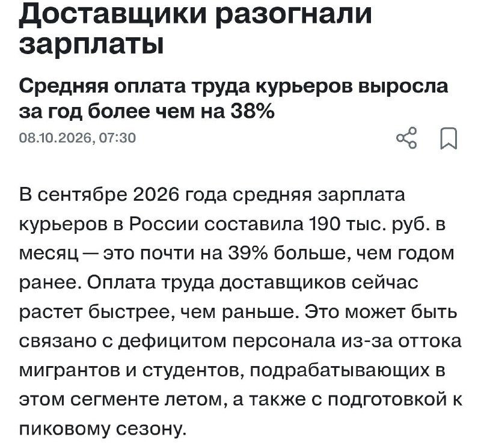
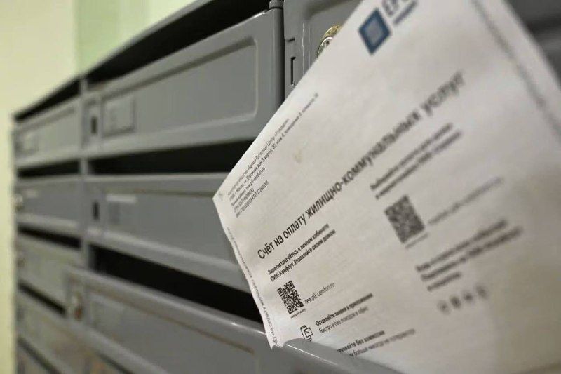
Сметы разрешено менять по соглашению сторон в пределах роста налога и выделенных бюджетных лимитов города.…

На этот вопрос ответил главный детский специалист травматолог-ортопед регионального Минздрава К таким причинам относятся…
Эндокринологи уже прошли обучение и начали приём.…
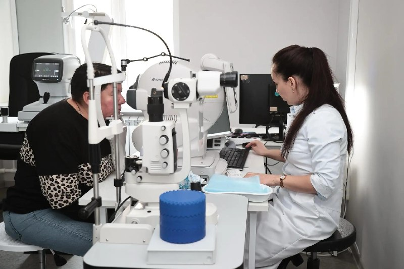
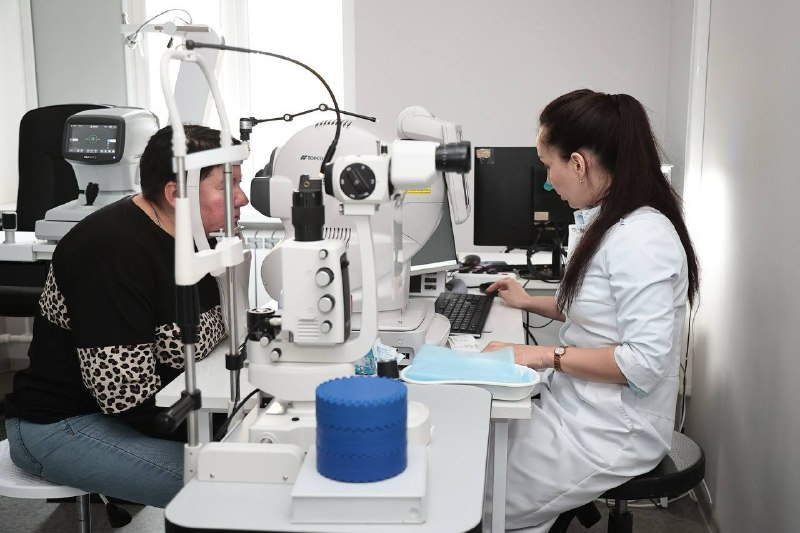
Новые диагностические кабинеты будут работать не только для горожан.…
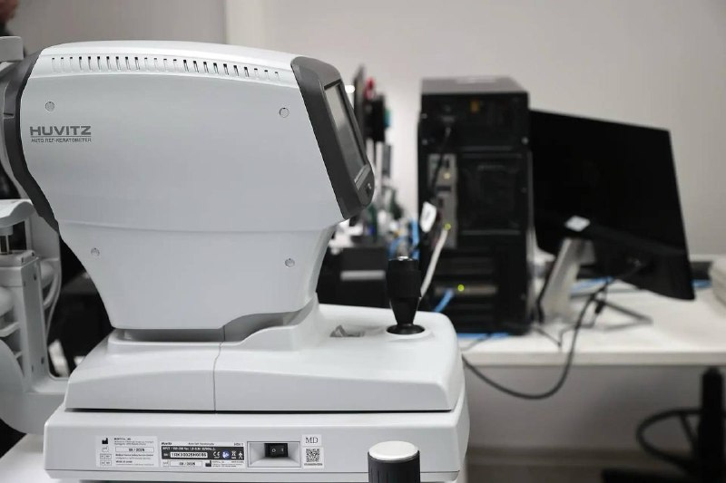
Кабинеты смогут посещать по направлениям и жители трех прилегающих районов области Мы в Telegram | Мы в…
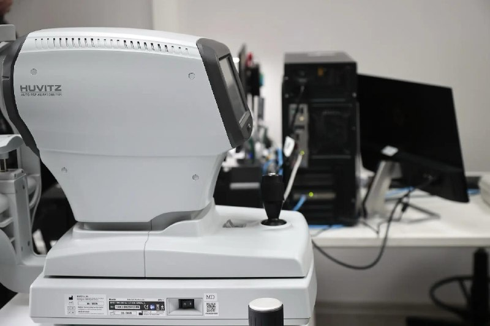
В поликлинику № 4 на улице Камышинской в Ульяновске поступило новое оборудование для диагностики осложнений сахарного диабета — результатами модернизации поделился губернатор Алексей Русских после осмотра лечебного учреждения.…
Врачи прошли обучение и ведут приём. Раньше такую помощь можно было получить в областных многопрофильных больницах.…
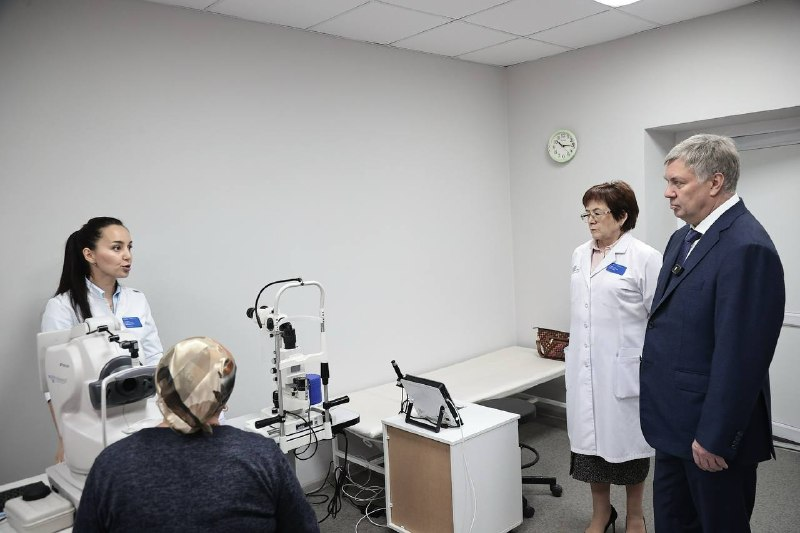
Всего по области батареи потеплели на 640 медицинских объектах из 663, в 13 районах региона больницы и поликлиники подключены к теплу на 100%.…
Отопление запущено в 60 из 63 круглосуточных стационаров Ульяновской области — об этом сообщили в региональном Министерстве здравоохранения.…

В активе спортсменов также серебро в смешанном экипаже на 200 метрах и бронза у мужчин на 500 метрах. Всего в турнире участвовали 28 экипажей из 19 стран.…
Ульяновские гребцы Данил Положенцев и Павел Скрябин завоевали пять медалей на Кубке мира по гребле на лодках «Дракон», завершившемся в китайском городе Юаньлинь — об успехах представителей регионального Центра спортивной подготовки рассказали в областном Минспорта.…
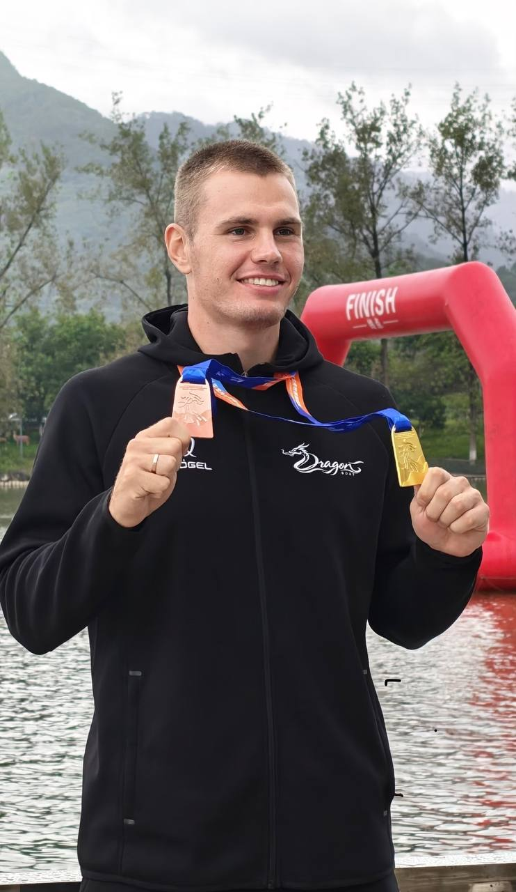
Здесь школьники смогут играть в футбол и баскетбол, заниматься на тренажёрах и проводить соревнования.…
Долматов оформил двойную победу. Серебро у Вадима Трифонова, Китаев дополнительно взял бронзу в абсолютной весовой категории.…
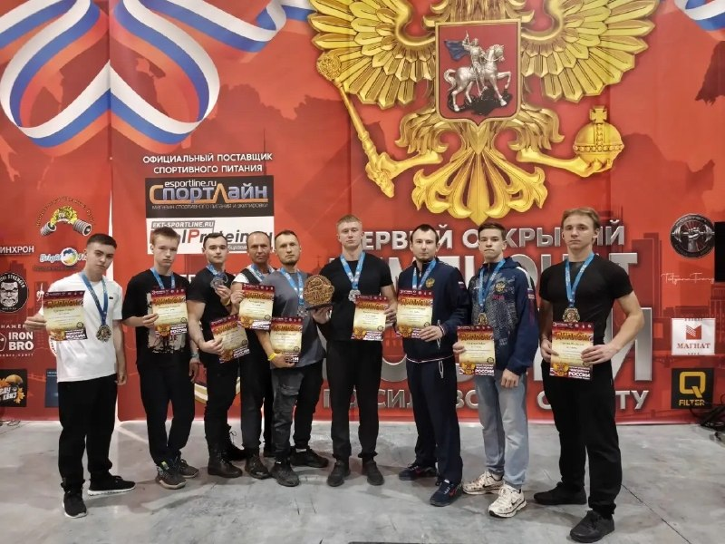
Девять золотых, одну серебряную и одну бронзовую медали завоевала сборная Ульяновской области на Чемпионате и Первенстве России по силовому спорту в Екатеринбурге — результатами соревнований поделились в региональном Министерстве физической культуры и спорта.…
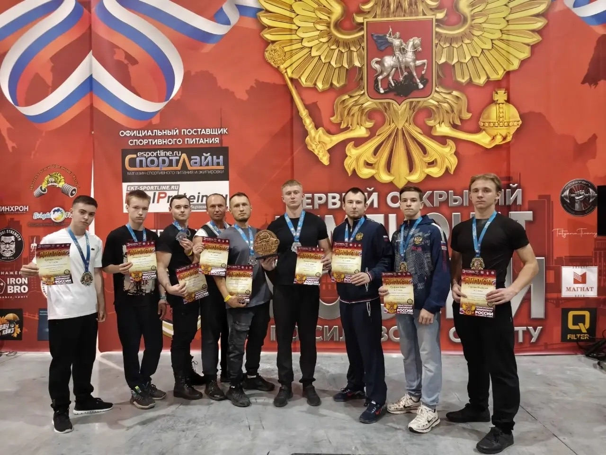
Возвращаться на ковер оперативного управления Безруков не планирует, но обещает стать мощным лоббистом для ульяновских борцов.
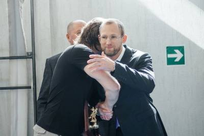
Спортплощадка такого типа в нашей области пока редкая, но не единственная: такие пространства уже работают в Чердаклах и Новоспасском, а до конца года планируется открыть ещё одну в Карлинском.…
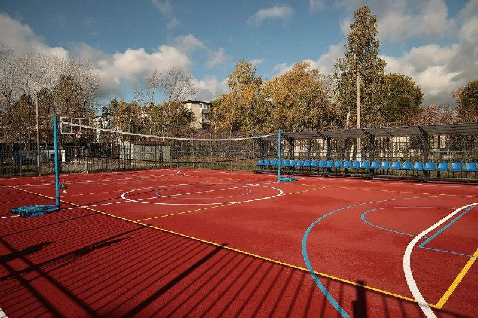
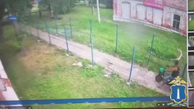
Возбуждено уголовное дело. Похищенное изъято.…
На каждого нарушителя составлялись постановления об административном правонарушении.…
За вождение с просроченными правами могут оштрафовать на 5000-15 000₽.
Во время ссоры, возникшей после употребления алкоголя, мужчина нанес жене не менее семи ударов руками и ногами по голове.…

26 июля подросток попал в ДТП и получил травмы. Дело с утверждённым обвинительным заключением направлено в суд.
Неужели до сих пор непонятно, что реальный энергосбыт никогда не будет требовать снимать деньги в банкомате во время телефонного звонка!…

При этом журавль ранен — у птицы воспалён голеностоп.…

Он также напомнил, что страна находится в длительном конфликте.…

По данным регионального УМВД, преступное сообщество состояло из трёх подразделений.…


Нарушения правил применения пестицидов и агрохимикатов выявили в 88% контрольных мероприятий на полях Ульяновской области за девять месяцев года — об этом сообщили в межрегиональном управлении Россельхознадзора.…
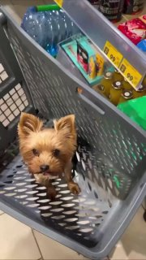
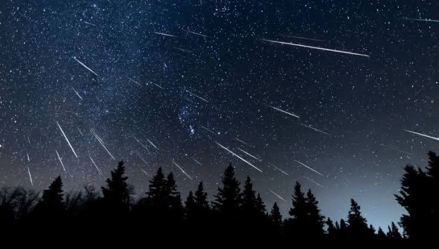
Тема употребления наркотических средств пугает каждого, и не случайно.…
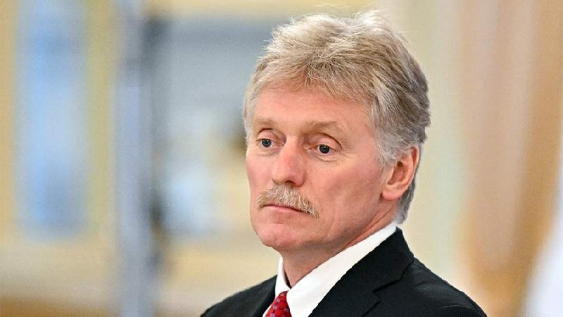
Речь идёт о зданиях: ▪️ Андрея Блаженного, 15 — жилой комплекс начала XX века из трёх зданий с элементами модерна.…
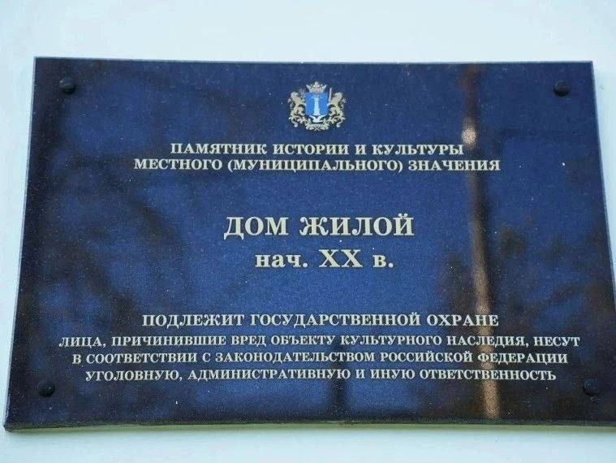


Российское представительство больше не может заказывать эти модели напрямую из Китая . Дилеры уже распродают складские остатки.…


К 11 годам (!) долги перевалили за миллион, учёбу он бросил, пытаясь отыграться. Когда у микро-лудика появились суицидальные мысли , ему предложили вакансию наркокурьера за 150,000 рублей в месяц.…
Участники обсудили роль исторического просвещения, особенности новых учебных пособий и их использование в школах Ульяновской области.…


Торжественная церемония награждения прошла в честь 94-й годовщины образования сил ГО в Российской Федерации.

Для нашего телеканала это особый праздник, ведь детство Евгения Луковкина, Владимира Гаврилова и Александра Рябушко связано с тёплыми воспоминаниями о Дворце творчества детей и молодёжи!…
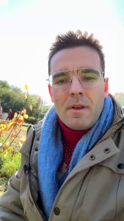
14:10–14:40 — Работа со словом. Ведёт Ксения Матулина. 14:45–15:15 — Хореография.…
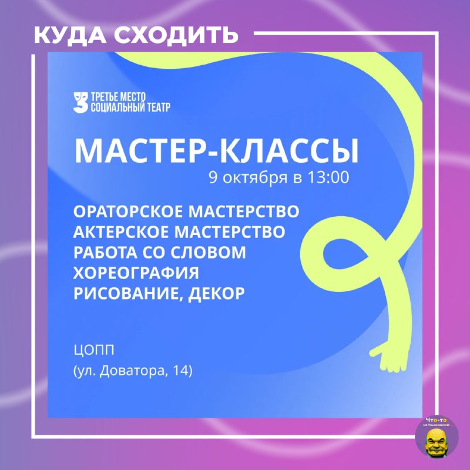
У школьников создаётся ощущение, что ради роскошной жизни совсем не обязательно впахивать в офисе.…
Во дворце творчества детей и молодёжи школьников 5-11 классов ждали тематическая пресс-конференция, медиа-урок, а также образовательные практико-ориентированные площадки, подготовленные Ульяновскими вузами и ссузами, областным Министерством финансов и региональным отделением Банка России.…
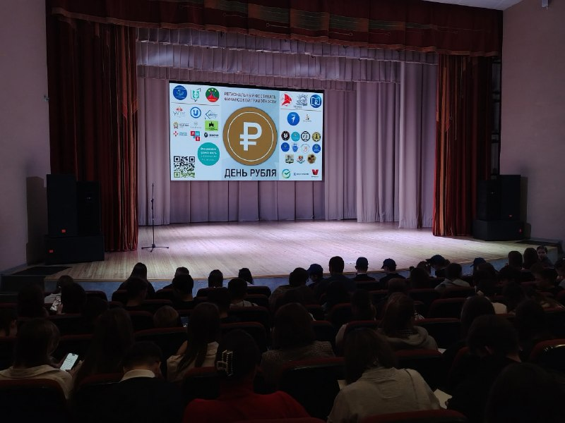
На переменах ученикам будут транслировать короткие беззвучные ролики длительностью до одной минуты (с возрастной маркировкой 6+), посвященные безопасности, науке, культуре, спорту и истории.…
Необходимая инфраструктура уже есть примерно в 6,5 тыс. школ. На первом этапе к проекту смогут подключиться свыше 1,5 тыс.…

В рамках всероссийского тура он снова выступит в нашем городе! В этот раз презентует новый альбом, исполнив уникальную программу со связанными руками под названием Solo Coda .…
Это не просто очки . Это возможность помочь сохранить хорошее зрение в период, когда глаза активно растут.…

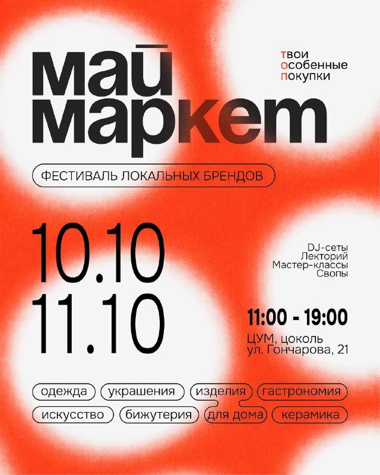
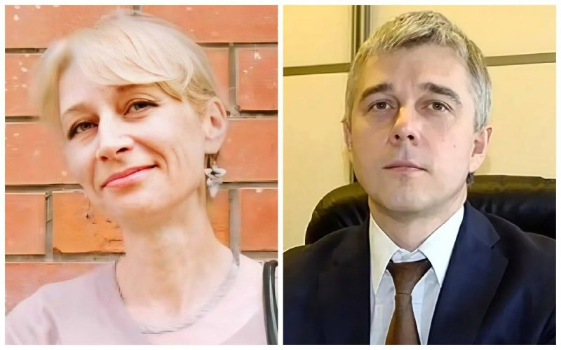
Его деятельность оказала глубокое влияние на религиозную, культурную и политическую жизнь Руси.…
В ближайшие недели объявят ещё одного мастера звука, который разнообразит музыкальную драматургию.…
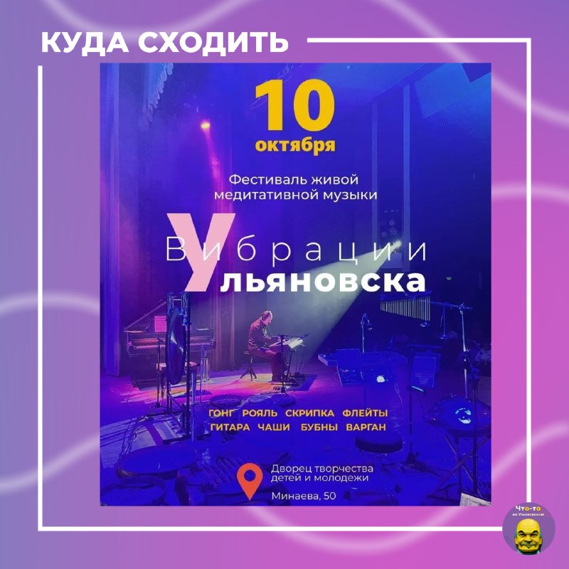
В списке редакции есть комедии, триллеры, хорроры, кино для семейного просмотра и классика мирового кинематографа.…
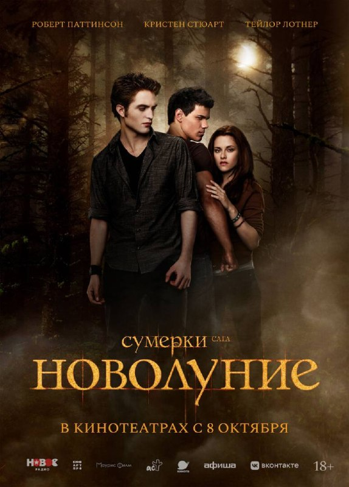
Инициаторами стали общественники и имам-хатыб соборной мечети Димитровграда.…
Неравнодушная местная жительница подкармливает его, но забрать к себе не может. Рядом много собак, а ночи становятся всё холоднее.…
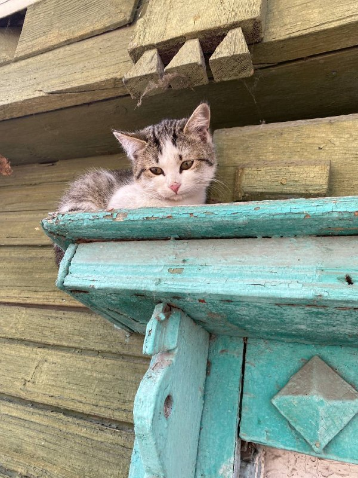
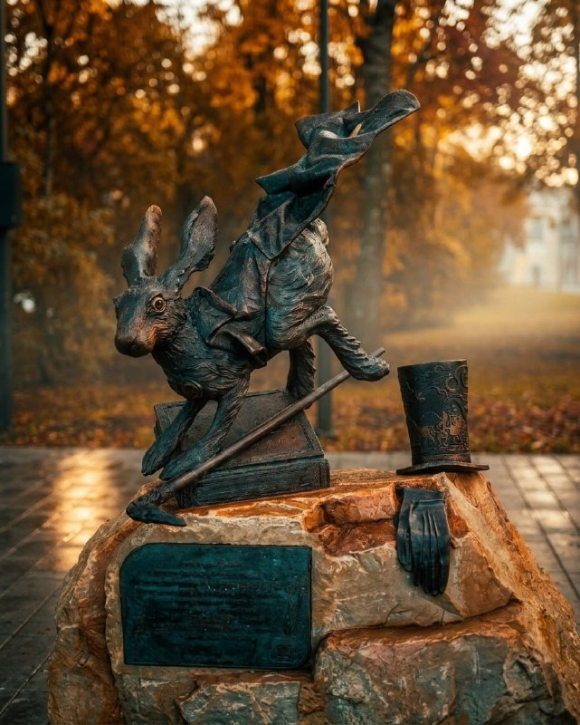
| Тема | Завтра | Ожидание | Уверенность |
|---|---|---|---|
| БПЛА и воздушные угрозы | ↑ рост | ~22.7 упоминаний | средняя |
| Школы и вузы | ↓ спад | ~25.6 упоминаний | средняя |
| Транспорт и дороги | ↓ спад | ~20.2 упоминаний | средняя |
| Медицина | ↓ спад | ~6.9 упоминаний | средняя |
| ЖКХ, газ, тепло | ↓ спад | ~15.1 упоминаний | средняя |
| Городская среда | ↑ рост | ~20.4 упоминаний | средняя |